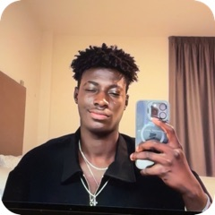

Hello.
I’m Seyi Ogundipe 
Right now: chalk, Cohort, and Computer Science at the University of Liverpool.See all my workEverything I can do
012026 · Founder and CEO
I founded and built chalk, an AI teacher that draws the lesson while it talks you through it. On a Mac it : guessing pixels, it landed 59 times in 100; naming the button and letting code find it, 97.
Read the case study →Click anywhere here and chalk draws for you.
022026 · 3D
I measured Liverpool’s university quarter from (OpenStreetMap and LiDAR) and built Redbrick, a 3D model you can walk through in a browser.
Read how it was built ↗ or click anywhere here
032026 · Founding design engineer
At Cohort I’m the founding design engineer. It’s the social layer for student life, and it lives in your . 2,000+ students are on the waitlist.
Read the case study →Cohort just texted you.
042026 · Pfizer AI Studio Hackathon
Dumpling was the sole winner at the Pfizer AI Studio Hackathon. Testers report bugs in their own words, and it folds the duplicates into . A person approves every step, then it goes to GitHub or Jira.

052026 · APIConf hackathon
Type what you’re selling into Wire and you get back a checkout link, a QR code and a live sales dashboard. I designed it and built its front end in one sprint at . It also turns any API into tools an AI agent can use.
062025 · Events
For Kulture, a night in Ojo, Lagos, I made the site, the tickets and the print. 430 tickets went in 5 days.
072026 · Motion
Subtitles is a page you steer with your , read through your camera. 1,000 people visited in 2 days.
Read the case study →This part of the page is captioned.
082024 · Lead product design engineer
Before all that, I led product design at Clark, an AI study companion, from a blank canvas to a shipped MVP. 4,000+ students joined the waitlist.
Read the case study →1-day streak
And the rest
I’ve also made chalk updates, a page for every chalk launch, drawn in crayon; Tiwari Town and Saleena Tiwari, two 3D birthday gifts; Seyi’s Park, a park you hop around to find my work; Saleena, a gift in 3 languages; Victor Chukwu, a portfolio with a piano, drums and a guitar you can play; Raise, Cohort’s raise told as a page; and Interfaze, a redesign. Older work lives in Fragments.
Where I’ve worked
I’ve been the founding design engineer at Cohort since January 2025. Before that I led product design at Clark, and at FourDimensions, where got 50,000+ visits on launch day. I started at Charisol, where a of Playmuzingo lifted conversion 47%.
- CohortFounding Design EngineerJan 2025 – Present
- ClarkLead Product Design EngineerSep 2024 – Jan 2026
- FourDimensionsLead Product Design EngineerDec 2023 – Dec 2025
- CharisolProduct DesignerMay 2023 – Dec 2024
Say hello
Building something? I probably want to hear about it.